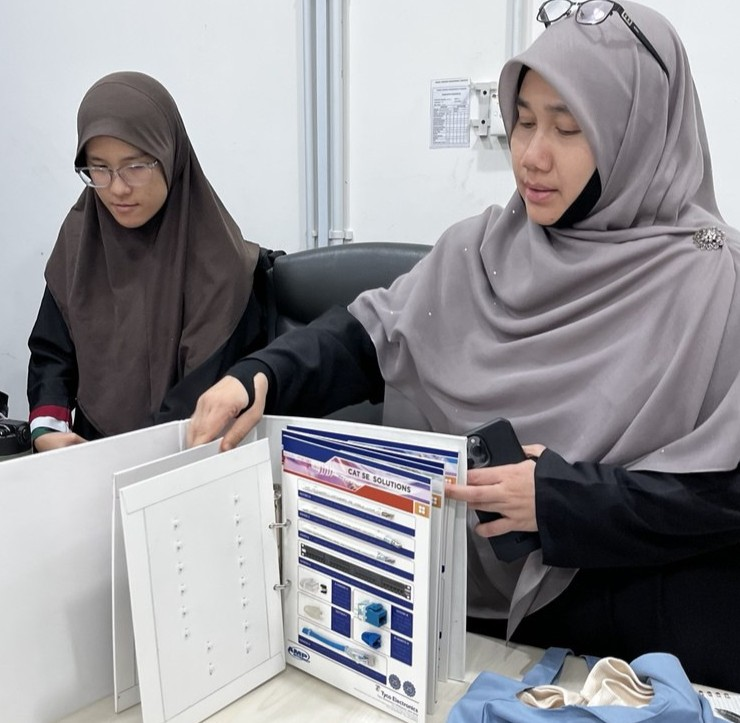
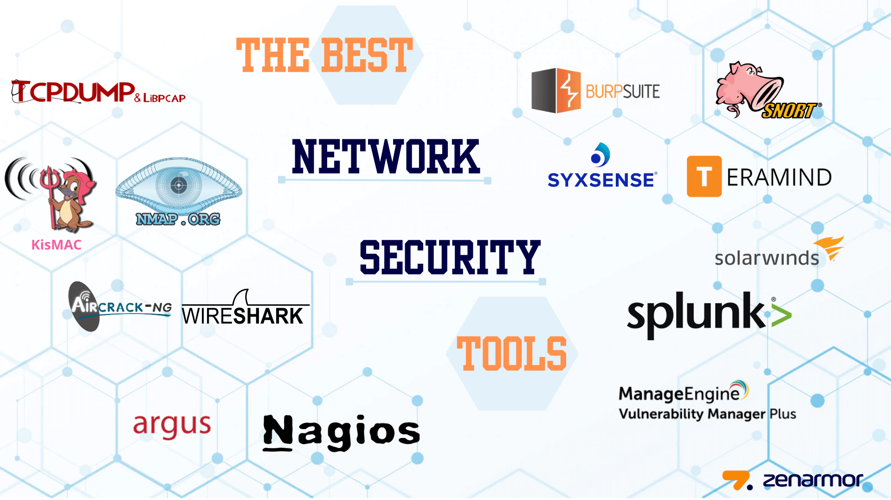
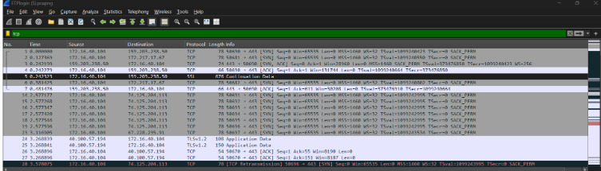
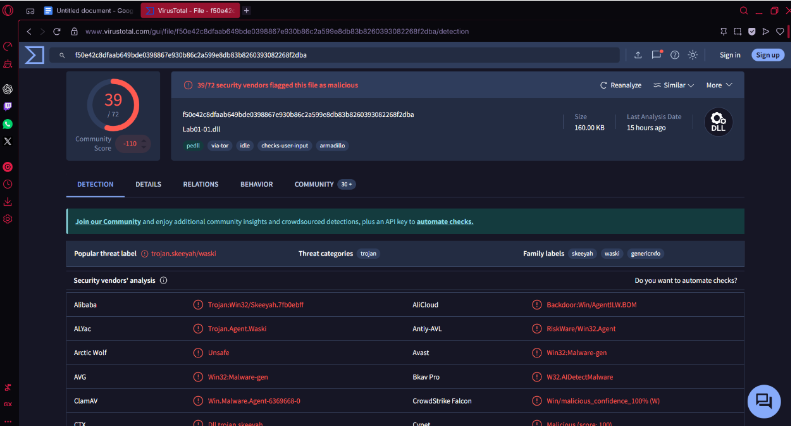
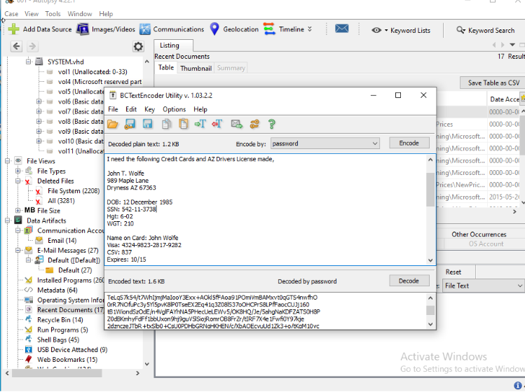
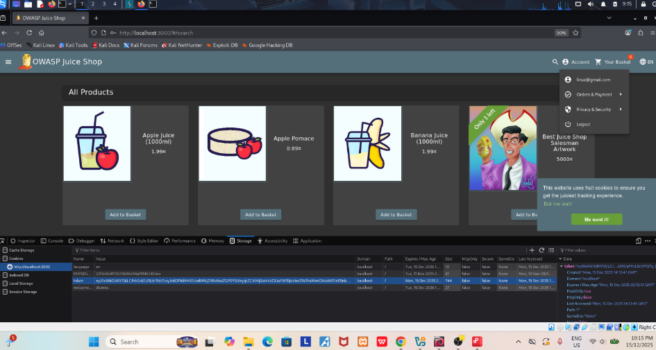
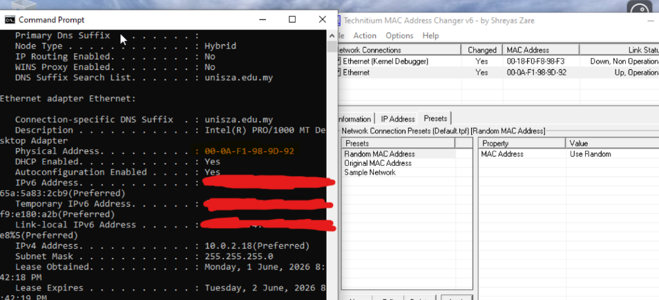
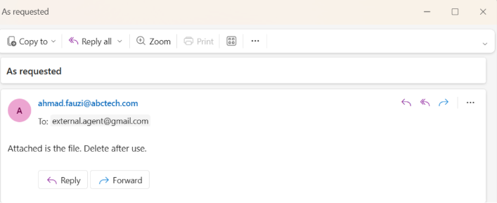
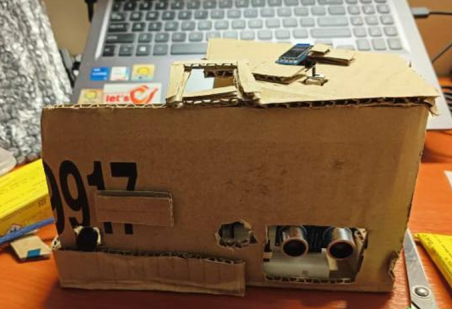
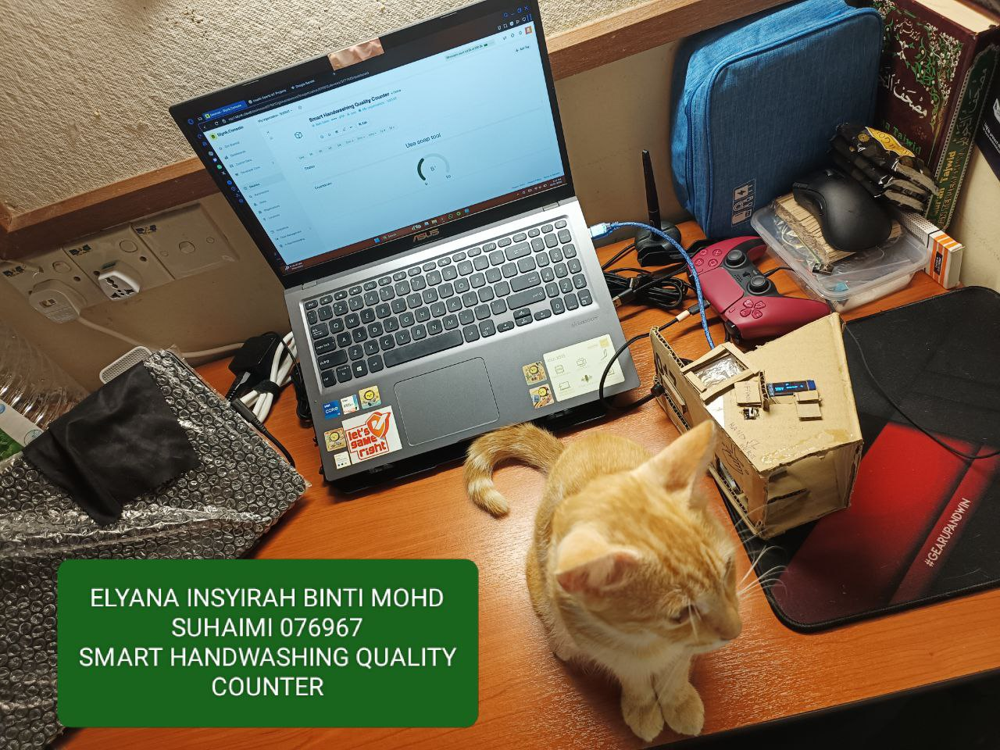

Career Exploration

Target Position: Network Security Analyst
A Network Security Analyst sits at the intersection of infrastructure engineering and active defence — monitoring live traffic, intercepting intrusions, and hardening the perimeter before threat actors find a foothold.
Core Responsibilities
- Operational Defence: Monitor end-to-end traffic baselines and serve as the organisation's first detection layer for anomalous behaviour.
- Threat Interception: Isolate, trace, and neutralise unauthorised perimeter anomalies and active network intrusions in real time.
- Protective Engineering: Translate threat-profiling data into action — staging firewalls, tuning IDS/IPS rules, and enforcing layered ACL policies.
Key Technical Competencies Required
Wireshark / Deep-Packet Analysis
IDS / IPS Tuning
Firewall Architecture
ACL Design
Kali Linux
Nmap / Enumeration
SIEM Platforms
Vulnerability Assessment
Skills Assessment
An honest self-assessment of where I currently stand against what the industry expects of a Network Security Analyst, based on coursework, academic labs, and personal projects.
Technical Skills
Network Infrastructure (Cisco Packet Tracer / GNS3)90%
Redundancy Protocols (HSRP, RSTP, Etherchannel)88%
Packet Analysis (Wireshark)72%
Penetration Testing (Kali Linux / Metasploit / Nmap)65%
Static Malware Analysis (PEiD, Dependency Walker, PEview)68%
Digital Forensics (Autopsy / FTK Imager)65%
Soft Skills
Analytical Problem-Solving88%
Bilingual Communication (Malay & English)90%
Development Plan

Core Technical Toolkit
Kali Linux
Metasploit
Wireshark
Nmap
PEiD
Dependency Walker
PEview
BinText
Autopsy
FTK Imager
BCText Encoder
Cisco Packet Tracer
GNS3
MS SQL Server
XAMPP
Career Timeline
Now — 2026 (Immediate)
Complete Degree & Earn Core Certifications
Graduate with a strong academic record in B.CS (Network Security). Earn CompTIA Security+ and complete the full CCNA certification exam to validate entry-level technical competencies.
2026 — 2027 (Short-Term)
Junior Network / Security Analyst
Join an entry-level security team. Build ownership over local threat-scanning routines, master enterprise firewall and SIEM tooling, and deepen Linux CLI proficiency through daily production use.
2027 — 2029 (Mid-Term)
Mid-Level Security Engineer
Pursue CompTIA CySA+ and CCNP Security. Take responsibility for VLAN redesigns, VPN policy management, and firewall rule reviews. Develop cloud security exposure across Azure or AWS environments.
2029 — 2031 (Long-Term Goal)
Senior Security Analyst / Team Lead
Design complex multi-layered infrastructure defences, oversee large-scale threat-hunting operations, and build a structured mentorship pipeline to guide incoming junior security specialists.
Target Certifications
| Certification | Body | Status |
|---|
| CCNA (Academic Foundation) | Cisco | ✅ Completed |
| CompTIA Security+ | CompTIA | 🎯 Target (2026) |
| CompTIA CySA+ | CompTIA | 📅 Planned (2027–28) |
| CCNP Security | Cisco | 📅 Planned (2028–29) |
Projects
Evidence of Learning
Click on "Explore Repository" to be directed to GitHub, or use the "View Report" button to read the documentation PDF inline.

Enhancing Hospital Network Resilience using Redundancy Protocols
An empirical performance study evaluating healthcare delivery network infrastructure using Cisco Packet Tracer. Simulated recovery windows by testing HSRP and RSTP.
Cisco Packet Tracer
HSRP
RSTP

Network Traffic Analysis with Wireshark
A network traffic capture and analysis project focused on inspecting protocol layers and analyzing protocol security vulnerabilities using Wireshark.
Wireshark
Packet Capture

Static Malware Analysis
Performed thorough static analysis of malware samples without executing them, using a professional toolchain to examine PE headers, imported DLLs, and embedded strings.
PEiD
Dependency Walker

Digital Forensics (Disk Analysis) with Autopsy and BCText Encoder
Utilized Autopsy to conduct detailed disk analysis and recover deleted data from compromised systems. Performed timeline analysis, file carving, and artifact extraction.
Autopsy
BCText Encoder

Penetration Testing on Web Application (OWASP Juice Shop)
Conducted comprehensive security testing of the OWASP Juice Shop, identifying vulnerabilities and providing remediation recommendations.
Burp Suite
Kali Linux

MAC Spoofing
Explored the concept of MAC address spoofing, a technique used to disguise the unique hardware identifier of a network interface card (NIC).
Kali Linux
MAC Spoofing

Digital Evidence Handling
Explored the principles and practices of digital evidence handling, focusing on the proper collection, preservation, and analysis of electronic data.
Theoretical




Smart Hand Washing System using Arduino with Blynk Dashboard
Designed and implemented a smart hand washing system that promotes proper hygiene practices through detection of a hand that will then start counting down till 20.
ESP8266
Arduino IDE
Certificates
Professional technical qualifications and specialised industry training completions (click on any card to view the full certificate):
Reflection
Dream Organisation: Microsoft
Microsoft processes billions of daily security telemetry signals across Azure and enterprise services — that scale is exactly what draws me in.
Contact